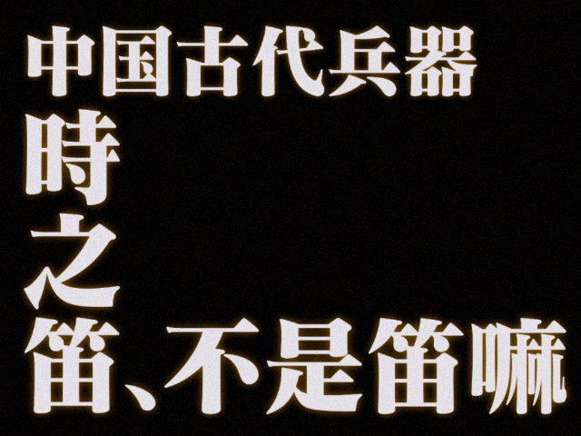
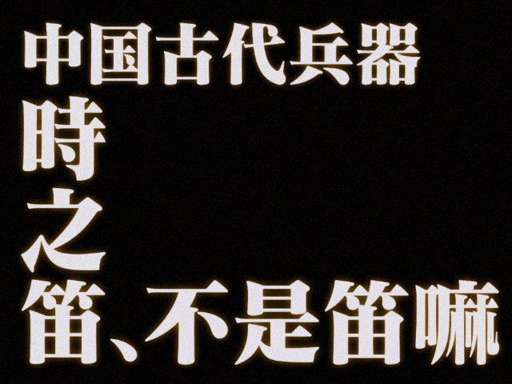

写在最前
“西十六之精妙，自四方、当立则初现，至千字、末谜（FM）则大成……”
“七大者，密吧创始人……今做西十六，七时浮想联翩，上歧路、下难题。……弹幕有琵琶者，行提示与七大……常崩溃，言名言、述误思。”
“西十六之参赛者，七大直播观者等，始在文档撰七大事件，以时间为轴，以名言为文，自称史官……”
“故七大之歧路，仍持续之；弹幕之琵琶，未终结之；史官之记载，亦未完之。”
感谢
👍💯👏以下史官·七之蚁参与编辑（排名不分先后，先到先得）：
几何星空
（下届CCBC17不会有这里面的题吧）shiveords
（肉脯脯/家里有个零食店）dao__li
（《七大云》栏目常驻史官）落堀
Sigma
噬梦浊流
（队内名称为llhhkl）（不要藏题不要藏题）addmeal
CeI₂NK₇
cyx.
(思路挺广的新史官)sky
(& aqua?)（Reviver Team / cff_0102）（某不愿透露姓名史官）
苍穹玥夜
yswyyy
Copy&Paste
JZE
GreasyPig
蓝矾
Tellurium
空城
EterIll
(网页化进行中)
正文部分
队伍信息：


🚩第一日 一道好题的诞生
8.18 20:00-20:30 模拟炸服
8.18 20:49 完成「五音俱全」


8.18 21:00 完成「通用机器人」
8.18 21:13 意识涣散
8.18 21:20 意识到多解
8.18 21:22 完成「举🚩不定」

8.18 21:29 拼出“义”
8.18 21:33 拼出“未”/“末”
8.18 21:35 拼出“勺”/“月”
8.18 21:36 拼出“江”
8.18 21:38 爆出“西江月”
8.18 21:40 爆出“秋收起义”
8.18 21:42 完成「一笔画」


8.18 21:43 开始尝试做“四方谜”
8.18 21:52 向弹幕寻求帮助 信用点-20000


8.18 22:00 “这个题当时真的有人能秒吗”
8.18 22:02 "今天的目标是四方谜一定要做出来！"
8.18 22:05 “对吗？不对吧？对吗？不对吧？......"
8.18 22:12 “哦~我似乎有点感觉了"
8.18 22:18 利用增速异常的信用点疯狂消费信用点直接看答案，引起群友争议
（诶seven这名选手信用点增速怎么是我们做这道题的时候的五倍啊，七大来查一下谢谢）

8.18 21:42 完成「一笔画」
8.18 22:21 得到：SEND NAZO “仰” 开始出题
8.18 22:23 "我们要做一个 善良的人，与人方便 与己方便"
8.18 22:25 《哪吒闹海》


解析：痛仰乐队
8.18 22:29 在CCBC官方群內发言：“这谁出的题啊，太好了吧”
8.18 22:35 开始出备选方案2
8.18 22:38 "出孬题我可是太擅长了"
8.18 22:40 "我可太喜欢这种题了，我可以在这出一天”
8.18 22:42 "我的目标是 把千字谜所有题目都做出来"


8.18 22:43 直播琵琶，完成「四方谜」
我看是我欲因之梦吴越
8.18 22:59 “让我们来看看是谁出的题”“原来是你小子”
8.18 23:00 把东京塔🗼认成法国埃菲尔铁塔

8.18 23:16 完成「恶魔斯基」
8.18 23:50 完成「数字」
8.18 23:53 明日目标：完成序章（未能达成）
🚩第二日 吧主七大的自尊
8.19 20:32 觉醒前世记忆，以惊人的注意力找到霓虹七色的代表图 “我有印象字是我P的”
8.19 20:42 “一不小心撇到弹幕”（一不小心琵琶了）
8.19 21:20 “怎么做了一个小时还没做出来一道题”
8.19 21:24 完成「霓虹七色」


8.19 21:26 拥有前世记忆的七大大刚解锁meta,试图直接提交STAR FARMING
8.19 21:36 将“小题大做”全部单词转为大写


8.19 21:43 被弹幕中琵琶提醒，意识到大小写转二进制，发出“又看弹幕，又看弹幕”的懊悔
8.19 21:49 发现不会加B站直播的房管 //“唉 我怎么什么都不会啊”
8.19 21:54 发现MacOS大小写错误，发出“天杀的苹果”的感叹
8.19 22:02 绷不住了，发现大写I和小写l一样没发现（超长叹气），发出最高指示：记住马克欧克朗

8.19 22:11 deepseek开始浮想联翩

8.19 22:12 用谷歌得到植物后，开始怪百度怎么不早说

8.19 22:13 完成「小题大做」
8.19 22:30 发现成语竟然有定字搜索 “哦还有 这么神奇的功能”
8.19 22:38 爆出战国策，完成「相辅相成」
8.19 22:45 把“当立”玩儿成消消乐
8.19 22:56 “房管把这个榜一大哥给封一下”
我不应该琵琶的555，好心提醒差点被禁言555（从此立誓不在琵琶）——当事人本人留
8.19 22:58 设置粉丝牌名字为“密码菌”，花费 20 硬币
8.19 23:03 小孩子才做选择，七大决定“当立”的hint都要，“这是一个dropquote……这是个啥？”

8.19 23:10 凑词爆组，拼好句 《一仗，我仗，未仗，她仗，杀仗，请仗，房仗，的仗，这仗》
8.19 23:14 尝试通过国际信号旗，进行爆破


8.19 23:18 ”这是温姐么？我被温姐批评了，啊~~~太伤心了“
8.19 23:27 “现在金盆洗手”“已经金盆洗手”
8.19 23:30 大脑已停止思考
8.19 23:40 “当心立...当心立什么呀？”

8.19 23:43 “这谁出的题，温姐，怪不得，怪不得呀”
8.19 23:48 打开“星之所在”的hint1
8.19 23:52 被投喂倒付费站内信

8.19 23:55 “为了大家明天的正常上班正常作息，我是真的……哎，要开吗”“好吧，我信你们了” 感动了xdm 好不容易七大才从自己仅剩的14w+点数中出了6k点(

8.19 23:56 打开星之所在hint2
8.20 00:00 “不行今天我一定要看到我的指南”“虽然今天已经不是今天了”

8.20 00:05 ζ “这是什么，epsilon吗”
8.20 00:07 自我感觉良好“终于走上正轨了”
8.20 00:08 "天姥（lǎo）"
8:20 00:11 “我连提示都开了题面还有用吗”
8.20 00:14 “我很佩服这八百多个队”“温姐你就死心吧，我也快死心了”
8:20 00:16 “拜耳命名法”“巴耶”“妈耶”
8.20 00:19 寻求弹幕帮助，想知道是否题目与小题顺序对应
8.20 00:19 “毕竟答案是star farming”（开始通灵）
这里史官们爆发了
激烈的讨论:要记的东西太多导致史官打架了
我们很和谐嘟
大家可爱捏
真的很和谐的
🩷🩷
8.20 00:20 七大哀嚎：“难道不应该在这儿吗？这是七个字母，这也是七个字母～”
8.20 00:25 七大哀嚎：“我们已经不知道搜了多少遍了” (七大可爱~)
8.20 00:26 “我们一步步来，脑子已经转不动了”
（七大绝望，我猜下面要直接Star Farming了）（666不烟了）
（传下去，CCBC创始人直播琵琶）
（什么琵琶，这是“我重生了，重生成为了七大，这次我要夺回属于我的一切，我看这题答案是star farming？”）
（史官们去开头署个名~）（新来的看到这里也记得回去署名）
（史记纪录七大，B站纪录史官，我们都有美好的未来）
8.20 00:28 逐步发现有很多答案能对的上 “对上辣！我终于对上辣！”
8.20 00:29 七大决定观看“史记”“我下播前把七大史记看一遍，我要，我会看的”（荣获官方认证）（👍💯👏）（七大\o/\o/\o/\o/）

与此同时，本页面完成了史官整理与感谢块的添加。好耶
（111真看嘛）（集体上电视）

8.20 00:33 七大对仙后座发表重要讲话：“真的有叫策的恒星啊，真有你的啊仙后座”
8.20 00:38 “我为什么又要用百度*2，不要用百度，会让人不幸”（明明是自己注意力涣散却怪罪百度）（七大可以试试看用嘴“泡面”）
8.20 00:39 找到新恒星海石一（Avior）
8.20 00:40 “不要走到歧路里”（搜索OB星）
8.20 00:40 找到吴越星
8.20 00:41 在知道了“sAArAaAminA”后便自信发言：“其实已经能看出来答案了现在，不过还是再找一个吧”（能看在哪）（只要胆子大nutir还是可以的（吗））（区区5次）

8.20 00:46 找到 Sadr“提取e，他是最后一个，真的吗？我已经紊乱了，彻底紊乱了”（怎么有人琵琶还找错了）
“怎么是天津一，你个骗子”（auv津爷您吉祥）
8.20 00:50 得到 sAAr AaAming “本场直播点赞已累计一万”(附带狂笑(迫真))
8.20 00:51 “我已经说不出话来了，是大理星吗？”
与此同时，由于对更加充分的交流的需要，史官群建立
（记得回答：7大歧记）
8.20 00:52 指3为2 “还剩两个，还剩两个，还剩二加一个”
8.20 00:53 提取出南三角座 α 后疑惑 Triangulum Austale 第三个字母不是 t 而是 i
8:20 00:53 “叟大力是你吗叟大力”“阿里木是你吗阿里木”“大吏目是你吗大吏目”“你起了个好名字啊大吏目”“克儿萨是你吗克儿萨”“克儿萨是你啊克儿萨”(难绷空耳)
8.20 00:55 再次被投喂倒付费站内信提示
8:20 00:55 呼之欲出的“五三”（以为要5年高考3年模拟了）
8.20 00:56 “江波座”“江波座你在哪啊”“江波几江波几”（注：人家是波江座）
🏁 8.20 00:56 完成「星之所在」[META0]
“前进！！！！！！”（ohhhhhhhhh）
8.20 00:57 决定返回“当立”
8.20 00:58 “来，弹幕，这几个字母是对的吗？”（这还不-62500？甚至不用延时查看）(来个staff把七大信用点扣成负的) （这下n人n足竞速跑了）
8.20 00:59 由于有一个 a 字母对但是位置不对，导致观众区出现混乱，随后出现 wordle 式回答

8.20 01:00 再次收到一个倒付费站内信

8.20 01:00 “我们怎么能用这种投机取巧的方式呢”（你用了多少次啊！）
8.20 01:01 “天呐，已经一点了吗”
8.20 01:01 完成「当立」
8:20 01:02 进入指南，上头了，完全不记得之前说过的：“为了大家明天的正常上班正常作息……”
“好吧好吧，再看一眼题吧”进入浮想联翩
8.20 01:02 “什么嘛，竟然是Seven起手”
8.20 01:03 针对《你的名字。》，七大尝试使用成语工具
8.20 01:03 “我们把第一步解开”“AABB式成语，我们来试一下吧”
8.20 01:04 “这还有个句号吗？这是一下子能猜到的吗？”
8.20 01:05 “完完蛋蛋”“毫无头绪”“按理来说应该提交一个浮想联翩什么的，是不是，有没有道理”“哈哈哈哈”“对啊，我的名字？”
8.20 01:06 又双叒叕收到一个倒付费站内信（本场直播的第四个）

8.20 01:08 输入“我的名字”“个人昵称”“选手ID”“还有一个句号”“昵称好像是左右结构”“昵称”“姓名”“ID”“称 呼”

“SEVEN是啥，数字，他总不能把我这个昵称的含义都理解出来吧，是吗是吧”
“还能管这个叫什么呢”
"Seven是什么，Seven是7啊，是我的名字啊”

“你没有名字（笑），好吧。你的名字吗？好吧。”
8.20 01:09 主播没声了（不说话装高手）
8.20 01:11 主播有声了，决定继续简单的做一下直到得到“违禁词”（然而似乎认为是“阿里巴巴”）（小声嘟囔：似乎忘记了还要看史记的誓言）
8:20 01:13 准备休息“我们要不然今天就先到这里？”（这里的明天是指？卡bug是吧）
8.20 01:13 明日目标 解出浮想联翩，三星Galaxy和你想Roll出怎样的比赛中的至少两道题
8.20 01:15 进入“你想roll出什么样的比赛”
8.20 01:15 Roll出2,5。七大被小七无视，达成结局2
8.20 01:16 查看史记未遂，进群翻遍所有地方没找到本链接，结果忽略了下面群友的最新消息
8.20 01:17 终于成功进入初次本页面
8.20 01:18 好奇图片的制作手段
8.20 01:19 “真的有人看录播吗？这么长，拿来下饭？那不得下一天？”
8.20 01:20 点赞了这篇史记
8.20 01:20 七大劝睡“你们是真的闲啊～哈哈，就不能好好地睡一觉吗你们～
8.20 01:20 明日目标浮想联翩和投色子：“纸笔可以浅做一下”
8.20 01:21 下播偷看，并在前面插入一个“偷看”
8.20 01:24 在CCBC官方群内发言：“图寻我必秒之”

8.20 01:24 CCBC 网站短暂崩溃，疑似七大下播浪潮使得服务器被赛博震慑，产生波动导致502
8.20 01:30 CCBC官方群七大大发言："😭我要朝谐星路线发展了"
C1314:一道好题的诞生 BV1Nj411f7xQ

(七大大可爱捏)
8.20 01:30 七大阴暗偷看史记（甚至还是微信登录
8.20 02:00 七大依然阴暗偷看史记,还没看完 （不会只是一直登着没下吧）（期待七大的留言）
8.20 03:00 七大下了，七大晚安~
8.19日-8.20日凌晨 更新——完
（真的是20日么[doge]）
🚩第三日 全果体与乃子房
由于不可抗力因素，本节部分词语进行和谐，阅读时请自行补回偏旁，网站尽可能保证不影响阅读。
8.20 20:23 史官其一发表奋斗宣言，要与七大比速度（注：在21:26左右便已完成）

8.20 20.30 晚上场开始，准时！敬业！主播也加入最新指示：


8.20 20:38“其实这道题后面会出现什么主播还是有概念的”（回来了，我的前世记忆）
8.20 20:40 DeepSeek给出错误结果，“我没有想到会卡在这里”
8.20 20:49 “真的有人会专心看我解这种题目吗”
8.20 20:52 被弹幕诱导搜索“白复生”
8.20 20:59 “诶，又有一个红色了，不对，那是我点的”
8.20 21:05 觉醒前世记忆“难道它就要出来了吗？”看着“大卫”填写了“生XX”
8.20 21:13 开始尝试中国各个省级行政区，以及广深、石家庄（因为BGM放的草东）
8.20 21:20 发现自己翻成了1952年的省级行政区划表
8.20 21:28 搜索“呐喊 台湾”搜到了不能搜的话题，立刻关闭网页
8.20 21:32 “有点拨云见日的感觉”
8.20 21:37 填出“全裸体” “那这个就是那个吧”

8.20 21:39 “要是再搜这个直播间是不是就没了”
8.20 21:43 开始尝试各种前世记忆“背一下”（然而失败）
8.20 21:49 “水浒（xǔ）传（chuán）”
8.20 21:57 指出“孙悟空”应该和“桃子”相连
8.20 21:59 “唐僧是少林寺的什么人”

8.20 22:02 填出“性交”但是找不到在哪
8.20 22:07 “是白臂膊吗？我当时背的就是白胳膊” “你在哪里？小白”
8.20 22:11 尝试基于鲁迅构建坐标系通灵
与此同时，Σ胜利归来（注：Σ此时已经将roll用AI计算概率做出）

8.20 22:12 “直觉告诉我不是这么做，因为弹幕里没有那么多叹号” 接着弹幕就出现了一大堆叹号

8.20 22:15 尝试搜索其它词😰
8.20 22:18 弹幕中感叹号依然如潮水般翻涌，基于“牛顿三定律”的搜索提出了“七大定律”
8.20 22:20 尝试“球形闪电”
8.20 22:20 “你们不要刷屏了好不好，这这这太多叹号了，刷的我意识模糊了都”
于是弹幕在感叹号中掺杂了问号

8.20 22:25 尝试“变性人”
8.20 22:25 “相亲为什么不连恋人？” “还是不够严谨嘛，出题组”

8.20 22:30 “秦始皇是什么人呢？阉人，秦始皇是个男人，是个古人”
“浮想联翩”已控制监管者(username:Seven)120分钟
8.20 22:34 "对不起刘亦菲，改天请你吃饭”
七大超话来的，谁是刘亦菲😡
8.20 22:37 感谢直播间的一百多名观众不离不弃
8.20 22:39 根据观众建议填出“功守道”后发现什么都没连出去 “你个骗子”
8.20 22:42"我会根据精神状态判断要不要直播到完赛"
8.20 22:47 “对！为什么没有北大，这严谨吗？”
8.20 22:48 向deepseek询问“与性交有关的词语”
“他不知道”
8.20 22:49 收到了今天第一条倒付费站内信，随后提交答案“rainbow”，回答错误
怎么还有 LGPH#1 的事

8.20 22:50 “嗷↓ 嗷↑ 嗷↑ 嗷↑ 嗷↑ 嗷↑” 填出最后一个所需的生开头三字词语，感谢提示弹幕
“感谢这位——槡之东兮苨之南，感谢你节省了大家的时间”
七大终于找到了自己求之不得的生殖器
？？？(好怪啊)
这下真是小七妹子了（
8.20 22:56“明日歌......明日什么歌呢？是歌嘛？”
《明日歌是五字的歌曲吗》
8.20 22.57 成功在sc诱导下填出“同性恋”
8.20 22:58 “山东有什么子？乃子吗？不会有这么下流的词吧”
七大最后也没有找到自己求之不得的奶子
这下是小七飞机场了（
8.20 22:59 “明日歌远，那是个啥” “明日歌是个什么”
8.20 23:00 “什么是远五字，明日何其多吗”
- 《前大远程》
8.20 23:01 完成「浮想联翩」
“群众的眼睛是雪亮的”
耗时2h31min👍💯👏
8.20 23:02 “弹幕想听什么歌么？ 随便放一个吧”
8.20 23:03 本想尝试●■★▲ “我感觉这个应该很难”，后在弹幕建议下进入“三星Galaxy”
8.20 23:04 “我们来直接看提示！”
“我们先来做五分钟，如果一个点都没有我们就来看提示，说实话规则都没看懂”

8.20 23:05 尝试理解 Penpa+ 的使用方法
“这有没有中文啊我@们来看一下”
8.20 23:11 询问弹幕要不要开三星galaxy hint2 表示开了的话巨简单 “好吧，那我们还是继续做一下吧”遂放弃开hint 2（暂时
与此同时，史官群内对于（三星、图寻、是猫咪耶）后补提示喂饭吃一事展开了激烈的讨论
（史官群对二进制饺子的提取hint的改动有着极其激烈的反应） 8.20 23:27 “它难道是韩文吗？（看到弹幕琵琶）啊，真的是韩文啊”
“我是先说的韩文，再看了眼弹幕，好吧”
8.20 23:35 意识到纸笔“还是有一定逻辑的”重新出发
8.20 23:39 以为直播间来片哥了
史官差点没一个[哭笑] “我还以为是广告哥呢，差点ban了”
8.20 23:41 “你们看下这是不是一个星星的位置”（最后一行第二个）（那里画了个X）（事实上是星星）

支持正义制裁
8.20 23:47 推不出来质疑弹幕给的信息是否正确“这里真的是星星吗”
8.20 23:47 “真的扣了么？（查询信用点）没关系 扣我也还有很多”
8.20 23:48 dodomos 准备录解析

8.20 23:49 回复弹幕“是呀，如果我都能做的出来的话那么大家看我录的也能做得出来”

“先假设吧”还在质疑，还在不相信（
8.20 23:54 “来吧 弹幕帮我检查一下有没有错的 我感觉是没有了”询问弹幕目前是否全对得到否定回答后直接撤回到五分钟前

与此同时，塞德莎（莎佬）也开始了直播进行三星解谜 （在约75min后，塞德莎成功解出三星）

8.20 23:58 再次请求弹幕信检查

8.20 00:02 “我感觉明天（实为今天）很快就能解出来” “还是温姐对我好啊”

8.21 00:03 厕遁，一回来就看到弹幕说是错解，“这也能错？”
8.21 00:07 决定看史记（后立刻被弹幕叫走检查三星galaxy）

8.21 00:09 决定看完史记后下播（下面 Penpa+ 的正计时已经悄无声息来到1小时了）
“所以秦始皇是什么人来着” “秦始皇你是什么人！” “有没有弹幕告诉我”
“秦始皇为什么是异人，他有超能力吗”
8.21 00:12 “乃子怎么了，你们不知道北京有一个地方叫乃子房吗”
8.21 00:13 播放《左小祖咒去乃子房》，作为下播曲
8.21 00:14 又给本页点了一次赞，感谢送礼物的观众和透露答案的弹幕
8.21 00:15 结束直播，七大辛苦啦，今天要早点休息哦


1.这里真的什么也没有吗？
已解锁(50信用点)是的，请先看别人的留言。
8.21 00:19 热烈欢送七大上床
8.21 00:20 七大 狡辩 解释 昨天三点才睡的原因
你来的真早！
我来啦～
nihaoya!
嘿嘿~
hihi~~
orz史官都太勤奋了
就位( 【没准备好】
就位了
（以上是打招呼的内容）
🚩第四日 凳子茶几小抽屉
8.21 13:00 群史官们力捧七大成为主播
连续包月、连续包年的七大
8.21 20:30 继续昨天的三星纸笔

8.21 20:35 七大决定稳扎稳打，做五十天
8.21 20:36 “大家可以连着一个月两个月的时间天天有直播下饭，真是享福了”“我也享大福了”
8.21 20:38 七大如何评价宣传图里把大脑做成种子的行为——“种树首先要用脑子种树”
8.21 20:39 "哪里有直播公告啊？我的直播间""哪里有直播公告啊？我的直播间""我的直播间"（回音）
8.21 20:40 “**不要打扰我的节奏，节奏你知道么。**我知道这句话很快就会出现在我的语录里了”
8.21 20:43 点名表扬“提示的好呀 提示的好呀”

8.21 20:46 “现在不是在比赛，我们现在是享受做题的过程，所以过程很重要”


8.21 20:47 “感谢这位B友，节约了大家的时间”

8.21 20:53 "是哪里出问题了呢？""是哪里出问题了呢？""是哪里出问题了呢？"“嘀”
8.21 20:58 “来把我这句话加到我的语录里：错不了一点~”（自豪、骄傲）

8.21 21:00 做出三星纸笔！开始提取！

8.21 21:01 错误的开始提取“韩文”
8.21 21:05 七七韩语开课：学习将韩文理解为象形文字 “小桌子”“小椅子”“小凳子”“墙”“墙上有个挂钩”“小抽屉”……

8.21 21:08 决定为大家省点时间，开启hint1
8.21 21:10 “看来我多直播还是有效果的啊，提高了我的直播水平”
8.21 21:12 世界名画《内部边界线》
(紫色的“内部边界线”)(这个我会，三叉戟嘛↑)

8.21 21:13 理解“内部边界线”“啊哈哈哈”（尴尬又不失礼貌的笑声），“啊~小抽屉出来了”
8.21 21:15 离成功最近的一步，决定使用谷歌翻译韩文

8.21 21:15 与此同时 dodomos老师回顾了CCBC12的一道小题
七大在B站还做过这道题的视频解析

8.21 21:19 七大手绘韩文：“圈 卜 L”
8.21 21:20 “韩文的你好是什么，朋友们见证奇迹的时候到了！”
8.21 21:21 完成「三星Galaxy」
8.21 21:22 "完美就像新的一样~"
8.21 21:23 对“二进制饺子”发出猜测“拼好字？”
8.21 21:24 对“你想Roll出怎样的比赛”发出言论：“不行不行！这个阅读量太大了”（跑路
“那好吧，听弹幕的话肯定没有错”（又回来
8.21 21:25 七大无视哈神

哈神达成结局2：认真的小七无懈可击

8.21 21:28 七大认真做题ing:这句话应该没有用（删掉）这句应该也没有用（删掉）·
8.21 21:34 专心的小七最可爱
8.21 21:40 七大开始使用思维导图工具
题外话：与此同时，CCBC16大群开始了一场史无前例的浮想联翩（是真饿了（各种意义上））


8.21 21:44 决定不搞那么多花里胡哨的继续使用Excel
8.21 21:47 挣扎一段时间以后决定重新使用PPT//专业对口
8.21 21:48 调用密码菌专用PPT模板，“我的Excel已经没有用了”
8.21 21:49 开始PPT教学时间“接下来是我的PPT教学时间”

PPT教学时间哈哈哈 哈哈哈哈哈哈哈 美工这一块儿 七大你能不能回头出一个PPT教程，我真想学 @七大8.21 22:05


Draw.io同理
8.21 21:58 中途换队说是 //:正常解密解到一半急眼了去偷答案了

这个是借到小七手机之后看提交的小题答案对不对（好像有点合理）
8.21 22:03 仔细研读剧情，发现自己在加班加点——认真的小七无懈可击

8.21 22:05 被弹幕科普
8.21 22:11 感叹道“线好乱呀 越来越乱了”

8.21 22:13 “感觉精神又开始恍惚了”——小七身体被掏空
8.21 22:16 "我已经养成非常熟练自言自语的能力了"
查询小七目前精神状态——精神矍铄
「自言自语」耗费随机精神，并没有什么特殊效果
哎呦没绷住七大一说话这里瞬间弹出来好几条颜色各异的线
此之为史官（）红红火火恍恍惚惚
8.21 22:18 “感觉直播间都快睡着了，以后咱们这个直播间就改成催眠直播间，助眠直播间”
走上ASMR赛道指日可待
8.21 22:19 在整理好了可能性的列表之后，依然认为“我不知道要怎么做”


8.21 22:21 七大开始了他的数学小课堂
8.21 22:27 思考提取方式“就算我算完了之后呢”

8.21 22:28 在开提示之后直接“对照答案” //开提示怎么变成看答案了（捂脸）

8.21 22:29 随即说出 “我们要勇于承认自己的不足，勇于面对自己的不足之处”
有点不要脸 演都不演了 ydbyl
8.21 22:30 “哇，他这个图画好啊，是谁画的？”（七大对hint作图做出重要指示）
对照答案后“大差不差吧，应该是对的，就当是对的”
“哦，有循环”
我求求您不要手算了好吗
8.21 22:31 “哎↑呀↓ 这个题””数学博士给你们出题，你们太有福了，享大福了，这也就是没有yyao大佬给你们出题”
8.21 22:32 “这道题就算做对一半吧”随后提交答案

8.21 22:33 完成「你想Roll出怎样的比赛」
8.21 22:34 史官群群主几何星空上舰
啊！今天进展神速啊！现在连11点都没到我们就已经做完两道题了！
8.21 22:35 感谢老板（史官）投喂的舰长

wk老板大气啊
8.21 22:36 打开绝密文档 （枇杷树）
// 演都不演了！！！

不难注意到有一个上级文件夹叫做CCB（难道还有CCBA,CCBB,CCBD）
8.21 22:37 “你们还真想看我直播50天吗？那肯定要提升一点速度的啊”
快进到7日速（？）杀然后囚于？？的7日谈
8.21 22:38 讲述自己特意把头版的图片文字P成了“BREAKING NEWS”，“是不是很细节”
EXTRA!!EXTRA!!!
8.21 22:40 “绝密文档你可以退下了 弹幕你可以上岗”
8.21 22:43 试图不通过折纸完成这道题（
8.21 22:47 “感谢 几何星空 投喂的小花花呀 感谢老板”
8.21 22:50 发现版本不对，自己把自己坑了 “我来给大家看一下这个原始版本啊”

8.21 22:51 展示温姐珍贵手稿：本题原始版本

8.21 22:52 “所以不要轻易地琵琶呀，就像你考试作弊，不能逮谁抄谁，你得抄个学习好的”
8.21 22:58 尝试不折纸继续使用PS进行做题
这小七空间想象能力还真有点东西

8.21 23:05 发现两个纸环不能通过PS粘起来"肯定是两个纸环呀"“哦哦是粘在一起”
8.21 23:06 “温姐要是看到我卡到这个题肯定要气死”
8.21 23:08 PS+空间想象 “如果温姐到直播间来弹幕提醒一下我”

8.21 23:11 “确实是要折一下会简单点”
温姐今天怎么没来，我知道落叶子老师今天去看PKU了
要不要邀请七大一起去看看PKU xdm
具有建设性的意见
这不是琵琶三字谜了吗
《史记·史官PKU列传》：

8.21 23:14 没忽视柳柳园 理了柳柳园雪子，不理刚刚的哈神
“你是不想我睡觉了吗”“就冲它这个提示这么多就不是等会做得出来的”
8.21 23:16 “啊，哈神在吗”“哈神在吗，哈神在打个1” “应该是看比赛去了” “先跟哈神说一句抱歉”
8.21 23:20 开 Link it all
8.21 23:21 “游戏公司除了任天堂还有什么吗”然后填入了任天堂

“真的吗，米哈游吗，Link it all 都是林克了”
搜索题一定能产出很多语录
8.21 23:23 看弹幕以为原神有重制版

8.21 23:23 收到了一条倒付费站内信
8.21 23:24 自信回应： “这个我熟，我老任豚了”
8.21 23:25 尝试在第三个空填入“时之笛”
8.21 23:26 将“乐器”看成“兵器” （用棍吹奏音乐？？？）
 

8.21 23:29 “哎呀我的眼睛是怎么长的啊，已经瞎了”

8.21 23:32 “看看排名第一就是琵琶” “埙肯定也不是”
8.21 23:34 七大在正确率的提示下百度时之笛 “早说呀 真是的” 遂将“箫”改为“埙”
8.21 23:38 “感谢互联网，我敢想象这个题要是出在20年前，大家还得现买一个游戏”
8.21 23:39 “这么细吗，我看看这是谁出的，这么细，温姐，温姐原来这么喜欢林克吗”
8.21 23:43 “对吧，这样很合理”（事实上是填成语）


8.21 23:45 日月穿梭

8.21 23:46 想下播

8.21 23:47 “你看日月穿……哦,哦如梭”（再次搜索）“那你看这日月穿梭，你看！”
急需▮▮▮▮▮▮【数据已删除】

8.21 23:49 “熟能生巧”——王阳明（事实上是：知行合一）
王阳明：“鲁迅说得对。”
8.21 23:49 “能搜绝对不要动脑子，把这句话也写到语录里”
8.21 23:51 发现这个题能点“这个题也太……这个程序也太……”“这编程让我编一年也编不出来”（填入“交口称赞”） //“一个一个一个一个一个...”

8.21 23:53 “我看看我明天白天的时候要不要偷偷把这个填一填” “大家这么m吗”
8.21 23:54 “欸，这玩意还可以移动嘛？”
七大，移动
8.21 23:55 发现要把所有东西放到下面，认为本题出的很有水平，决定择日再做
东西可以放！太有水平了
8.21 23:56 观看今日份的史记
8.21 23:57 呐喊“哈↑神↓ ！，不要退舰啊”
8.21 23:58（播放看史记の小曲）七大开始了他的《朝花夕拾》
小曲是《愚人的国度》
8.21 23:59 看到史记想起要修改直播公告（没找到，遂放弃）
8.22 00:00 “以你们这个总结的篇幅马上就可以出书了”
8.22 00:01 长叹：“嗯…………………………………………好吧”
帝王引擎
8.22 00:02 长叹again：“嗯…………………………………………好吧”
8.22 00:02 感叹“大家记的很详细啊，感觉看这个都不用看直播回放了，直接按这个剪切片”
8.22 00:02 短叹：“嗯……好吧。”
8.22 00:03 观摩施工队来了“就像是看一堆辛勤的小蚂蚁在施工““感觉我能在这看很久很久”
8.22 00:06 进行感谢，“祝大家睡个好梦”，随后秒下播
🚩第五日 智能识别希望文
8.22 16:15 史官更新了本文档的封面图
8.22 20:03 宣布直播延迟的消息
8.22 21:05 七大抵达直播间
8.22 21:06 展示今天白天Roll出的作品，讲解概率的来源（七大的数学小课堂）
8.22 21:08 说明 roll 题不用编程不用 AI 也是可以手算的
七大用他的毅力征服了「你想Roll出怎样的比赛」
8.22 21:09 回到 link 题
8.22 21:11 思考是否要打开旷野之息在游戏里实地调查“我是不是该打开游戏玩儿一下”
（借解谜之意偷偷玩儿一下下）
8.22 21:12 “但是我现在就算打开旷野之息你们也看不到对不对” “所以我要不要打呢”
8.22 21:19 对自己的游戏记忆陷入怀疑“我怎么完全没有印象啊”
8.22 21:20 “你这百度，我刚想夸夸你，真是一点也不能相信呀”
然后打开 deepseek
8.22 21:22 “哦，我有点印象了”
8.22 21:23 “哇塞，这都知道，真不愧是你啊，deepseek”
8.22 21:30 “AI 又不太行了吗”
8.22 21:31 “幸亏我没有打开旷野之息自己找好吗，自己找更难找到”
差点就玩儿上旷野之息了
是这样，游戏区-小七Official
8.22 21:32 翻阅起高清地图
8.22 21:34 尝试在地图上看出来瀑布
8.22 21:35 询问 AI 无果，填入“东部蓄水湖”
恭喜七大获得成就：《塞尔达传说：迪普西克》👍💯👏
8.22 21:38 “哎呀，我真是读题太不认真了”
8.22 21:41 因为字数不一致，选择性跳过正确答案 “这个AI太不严谨了”
8.22 21:45 “完全不知道这个 AI 在想什么”
8.22 21:51 狭路相逢，标新立异
8.22 21:55 “我正在干什么？解谜吗？我在直播。”
8.22 21:59 找不到“占”字
8.22 22:04 将“白”放在“拍”下面没有连上，怀疑出 bug 了
8.22 22:06 “有类似这样的纸笔谜题吗”
8.22 22:06 “哇这个真的好难啊，有点想要放弃了”
8.22 22:07 “这个真的正常……这样说好像评论区都不正常一样”“这样说要被写进语录里了”
8.22 22:08 找到“占”字
8.22 22:09 “这题的答出率真的这么高吗？”
8.22 22:10 “哇塞大家都好厉害”（棒读）
8.22 22:13 试图连接“春日影”，“弹幕一直在说‘春日影’，这怎么连呢”
8.22 22:14 “啊，春日影是梗吗，是什么梗，是一首歌吗？”

8.22 22:14 注意到直播间没有BGM（“我说怎么这么干呢”）
8.22 22:14 演奏《春日影》
又看一集（
8.22 22:18 “我感觉这个唱的有气无力的，是不是声优在刻意用假声唱”
8.22 22:19 “粉丝不要喷我啊，有这首歌的粉丝吗，叫什么，CRYCHIC，不会读”
8.22 22:20 用 Excel 辅助 //?
8.22 22:22 “我现在把这首歌单曲循环，特别能表达我现在的心声”
8.22 22:23 “哎呀唉哈哈——填不对嘛”
可爱捏
8.22 22:24 “还是弹幕厉害啊”
8.22 22:25 “没有弹幕怎么解 puzzle 啊”“还得是弹幕啊”（x2）
8.22 22:26 在弹幕帮助下拼出一个区域
8.22 22:26 认为此形状是小狗
8.22 22:31 “嗯，合理” “那我们再找两个的，把两个的拿过来”
8.22 22:32 寻找上面是口右边是立的字未果，将标新立异改为另当别论成功连出
8.22 22:35 怀疑上面第一个拼出来的区域没连上的两个填错了，重新找旷野之息高清地图
8.22 22:36 听弹幕的“把更有价值的事情先做了”，继续连线
8.22 22:41 “这算 Link it all 了吗？应该算吧”
8.22 22:42 再次确认“狭路相逢”应该是对的
8.22 22:44 “还是弹幕吧，弹幕可太懂了”
8.22 22:47 念弹幕：“主播好帅”“你们这都能看出来吗”
8.22 22:52 寻找下半边是“卜”的字，找到“下”，成功连上

8.22 22:53 测试系统智能性，如右上图填入“卞” “唉，真的好智能耶”（判断不了是不是“下”字了）
8.22 22:55 回应弹幕：“不会很好拼的，因为它太散太多了”
8.22 22:56 上个厕所出个恭，马上回来
8.22 22:57 我在上厕所出恭比赛中取得了1分钟的好成绩，你也来试试吧！
8.22 22:58 温姐加入琵琶队 “温姐好急，温姐来了吗” “那把它们挨得近一点，别把温姐急到了”
8.22 22:58 关于史记发表重要指示：“上厕所出恭就没必要记了吧，人有三急”
8.22 23:02 温姐透露珍贵史料
8.22 23:03 “折蛋白质是个什么鬼啊”
8.22 23:04 邀请温姐“科普”本题是如何实现的“如何实现你的宏伟构想”
8.22 23:05 解释本题是温姐编的“温姐出的题都是自己编的啊”“温姐是一个合格的程序员”
8.22 23:06 由于某史官对本题大不敬，当场判处：“把他拖出去，这个cff_0102，看看他比赛中是不是也用的这个id，把他加入黑名单”（史官-1）
8.22 23:12 纪实
可恶啊，四符号怎么你们了（
8.22 23:14 七大以钢琴考级为例给观众讲育儿哲学
8.22 23:17 “还得是弹幕啊”
8.22 23:18 由于在第79空（第5宫的右上角）中填入“丝”，认为15空（79空的下面）是“天”，思考“？下天”是什么提取方式
8.22 23:19 认为工具网站的广告很糟糕，遂刷新（
8.22 23:20 在日语网站中寻找汉字
8.22 23:22 通过百度 AI，认为驿站的主人是“金卢比”
8.22 23:24 由于卡题卡了很久，想放一首《时间都去哪了》
8.22 23:25 七大没有反应过来他的直播没声了只剩下微弱的BGM了
8.22 23:28 “现在有声音了吗，歪歪歪？”七大翻弹幕终于意识到没声音了随后恢复
8.22 23:30 不知道“布”的上半边是什么字
8.22 23:30 “上面是个文下面是个布是什么字” “ε=(´ο｀*)))唉，哎↑呀↓”
8.22 23:31 认为广告太恶心了用表格窗口挡住
8.22 23:32 “什么叫希下文，（搜索）啊，西夏文，是这个西夏吗”
8.22 23:33 “希腊文吗，也不对啊” “弹幕已经蠢蠢欲动了”
8.22 23:34 询问 deepseek
8.22 23:35 搜到“希卡”，感谢弹幕 好烟花我飞沙
8.22 23:36 搜到相关文献，感谢贡献者 天使猪乐乐
8.22 23:37 有重大进展，与温姐同乐
8.22 23:38 “万万没想到这个希卡文字还能这么出题，还是温姐太强了啊”
8.22 23:39 不会用 nutri
8.22 23:40 感觉 nu 到的第一个答案"METAL FOIL"不对
8.22 23:40 觉得"METAL COIL"很对，提交发现不对
8.22 23:41 抱着试一试的心态提交"METAL FOIL
8.22 23:41 完成「Link it all」
8.22 23:42 打开“复习资料”
8.22 23:43 试图在复习资料的第1小题里回答 0 1 以及整串数字
8.22 23:43 百度搜索第一题题面搜到“圆周率x位”，尝试提交 "π" 不对
8.22 23:44 “至少我们知道这是圆周率就好了”
8.22 23:45 发现并不是圆周率，“再也不在百度搜东西了，这个百度，我宣布你不行”
8.22 23:46 征求明天上播时间，看弹幕询问“6:28是什么梗”（是GPH开赛时间）
8.22 23:48 “睡一个好觉，睡到自然醒，吃一个早饭，把中午的外卖一点，在群里一通知，大概上午11:30，我们就开播，一边吃一边解，一边吃一边解，你们看的下饭，我也一边吃饭，我觉得这个计划妙哉”
8.22 23:49 观看本文，播放下播の小曲（舒缓一点的，适合于睡觉的）
8.22 23:51 评价封面图“设计比较平淡，没有体现出歧路的感觉，和解谜的关系不是很大，文字不够突出，……（某被拉入CCBC黑名单的史官：同传好难根本记不下来），和logo的关系也不是特别的协调”，声称第二天要“检查作业”
群史官们收到了 这就开始操刀改
求七大指导 向七大学习
8.22 23:52 亲自操刀编撰史记
8.22 23:53 “我表示好吧，这个百度永远不值得信任”
8.22 23:53 “今天好像比较平淡，因为我们一直在搜索”
8.22 23:54 评价 meme 图“哇，好可爱啊”
8.22 23:55 七大忘记今天应该取消点赞后再重新点赞
8.22 23:56 明天目标：努力见到指南区meta，基础目标：至少解出两道题，下午一道，晚上一道
8.22 23:57 “感谢大家的陪伴，明天就是周末了，预计明天十一点，如果起早了，可能会更早一点，大家晚安”
8.22 23:58 “还有两分钟结束今天，大家晚安，好吧” 对各位观众（依次点名）道晚安，“大家晚…”随后下播
8.23 00:01 史官讨论封面的修改
8.23 01:26 七大决定帮助群史官们完成封面的设计（原来是做GPH么）【数据删除】
🚩第六日 超管笑点不解析
*有史官要去打 GPH 了
*有另一个史官也要去打 GPH 了
*鲁迅说过：“在CCBC大冒险的大厦上笼罩着两团乌云，一团是GPH,另一团也是GPH”
8.23 02:19 “原来明天早上就gph了啊，这谁还直播C16啊，不播了不播了，明天做gph岂不美哉，这不能播吧”
8.23 02:25 "gph还是值得尊重一下的好吧"
七大也要去打gph了（ //GPH事变
GPH你欠我的用什么还😭
你还我们的七大😭
8.23 20:00 七大开播
8.23 20:01 比平时早半个小时开播，决定做七大歧记logo
8.23 20:02 “趁着现在史官应该不在，我来偷偷地播一播” //但他没想到有忠实史官每次直播都不会落下（
8.23 20:05 “真的有人看我直播做这个logo吗”“我也是够闲的”
8.23 20:21 使用豆包AI生图工具，输入到一半时内容被清除“这也太不友好了”
8.23 20:24 七大使用AI生成工具生成包含“大侠记”字样的图片（
8.23 20:25 七大成功生成包含"7大歧记"的图片,评价：“特效有点廉价感”，并再次
8.23 20:27 生成了奇怪的图片，放弃AI生成图片
8.23 20:28 开始回归CCBC16（并非）
来自大群：被GPH按在地上揍得连声音都发不出才意识到C16和风细雨的宝贵
8.23 20:29 “给 GPT 一个机会”，继续使用不是付费版的 GPT 优化 logo
8.23 20:31 GPT 不回复，开始做圆方星三角
8.23 20:32 “看一下 GPT，还没完成，慢！”
8.23 20:32 “哇，还得是 GPT 啊，哇塞，这就好多了吧，还得是 GPT 啊，把这个发到群里，很好，我很满意”
8.23 20:33 现在专心的看一下题
8.23 20:34 阅读弹幕发现“谜题元素”没了，继续要求 GPT 生成图片
8.23 20:35 “交给 GPT，我们先继续做题，不得不说它这个效果真的很炫，还加了一些这个材质感”
8.23 20:36 回去做周而复始
8.23 20:39 觉得没必要开弹幕，于是把弹幕关了，四句话还留着
8.23 20:40 说明自己还是看得到弹幕的，只是不显示在直播画面中，然后分享自己的界面视角
8.23 20:43 展示极高的空间想象力“能不能不折就把它画出来”
8.23 20:45 观看 GPT 新的生成图，觉得更喜欢刚才那版，因为有史诗感，更有冲击感
8.23 20:46 继续看题
8.23 20:49 放弃空想，开始付诸实践
8.23 20:50 关心大家GPH做的怎么样
8.23 20:52 加入文字“折纸中”
8.23 20:52 觉得自己折的非常简陋，因为用的是麦当劳的手纸
8.23 20:55 觉得这是自己折的最敷衍的一个
8.23 20:56 发表重要指示：“真不是串的吗，不要放过这个萌新”
8.23 20:57 认不出自己写的字
8.23 20:58 重要发布：“本届比赛的所有折纸题我都宣布放弃”
8.23 20:59 开第四个提示后认为“这等于没说呀”
8.23 20:59 开第三、二个提示后“我怎么有点没看明白”
8.23 21:01 “华卢睡？” “我又该怎么翻译这个草书呢”
8.23 21:02 在弹幕指引下看懂第四个提示（其实还没看懂，似乎以为要接两个词提取中间的字）
8.23 21:02 “英达这不就已经是个词了吗？”尝试英字组词：“英雄、英国”
8.23 21:03 搜索“达字组词”，一个个把首字拼在英后面念过去，包括“到达”
8.23 21:05 在弹幕提示得到“英伟达”后仍然以为是要接两个词，搜索以桃结尾的词
8.23 21:06 在弹幕提示下似乎意识到自己分组分错了，因为“版？桃”组不出来
8.23 21:07 纠正后认为这样正常一点，但是不知道“黑什么桃”
8.23 21:08 成功补全词语 “还得是弹幕啊”
8.23 21:08 “所罗门的英文这么直接？”然而这本来就是个音译词
8.23 21:10 把所有词直接连在一起提交发现不对
8.23 21:11 在弹幕提示下发现一个一个交是里程碑
8.23 21:13 看完提示2“等于还是要折吗？真的吗”
8.23 21:14 “我还是拿酒精笔写的，我去，一个个都晕开了”
8.23 21:15 尝试继续在不折纸的情况下“两两配对”，认为答案是三个字母
8.23 21:17 回弹幕“题目图片里还有东西没用上？真的吗？我觉得都用上了啊”
8.23 21:18 回弹幕“主要是我用来折的是个手纸”
8.23 21:20 回弹幕“不是三对吗？再看看”
8.23 21:20 “不想再浪费纸了”“假设我们这道题已经做出来了好吧”
8.23 21:21 还是不想折，直接开爆
8.23 21:23 假设一些词出现在正面，一些出现在背面，将同一面的交叉的删掉
8.23 21:25 又觉得一面的也可以相交，然后填了回去，“好复杂啊”
8.23 21:26 “能不能让我直接看答案”
8.23 21:27 “怎么在不折的情况下看出哪面和哪面是正反面的关系，好吧，这也是个问题”
8.23 21:28 “哈哈——太折磨了，（看弹幕）难道一定要折吗”
//七大又开始卖萌力（
8.23 21:29 “感觉要是我早就折了的话这道题早结束了” “（纸张的声音）主要是我还没剪刀” “（纸张的声音停了下来）我们就假装这道题就已经做出来了好吧，假装我有一个队友ta已经帮我折了”
8.23 21:30 “我们主要是为了节约时间好吧，看一下视频” 然后打开答案解析
8.23 21:31 感谢答案解析中提供视频的玩家 BugWritter
8.23 21:32 认真阅读答案解析
8.23 21:33 到重点了，换一个激情一点的音乐，换一个豁然开朗的音乐
8.23 21:36 放弃模拟提取过程，直接提交答案 INSPIRED 通过本题，开新题笑点解析
8.23 21:38 “好奇怪啊”
8.23 21:39 “诶，这是什么，令人忍俊不禁，点进去看一下，这是什么啊这是，好奇怪啊”然而观众根本看不到搜到了什么因为被表格挡住了
8.23 21:40 看弹幕发现表格挡住了然后关掉了
8.23 21:41 “那是个游戏吗？”
8.23 21:43 看弹幕琵琶得到“苏联笑话”
8.23 21:44 发现搜的网站右边有可能封直播间的内容，紧急关掉
8.23 21:45 想直接开提示发现还要等时间
8.23 21:45 “我们找到一个就直接开答案吧好吧”
8.23 21:45 盐都不盐了（双重意味），直接开解析
8.23 21:47 还在跟着解析提取中
8.23 21:47 🈲直播直接被超管拿下🈲
20:00-21:47 直播回放卒
8.23 21:48 “朋友们我又回来了” “这告诉我们什么道理呢，不要在红线上跳舞好吧，不要在危险的地方跳舞” 随后继续不演了直接输入答案通过此题
8.23 21:52 想要直接一个个搜索碱基而非查表
8.23 21:56 认真学习碱基配对，并猜测小写RNA大写DNA
8.23 21:57 将生物题题面碱基配对后发现毫无头绪，完全没有考虑过密码子
8.23 22:00 物理题询问 GPT 成功解出第一题 BIRTHPLACE
8.23 22:00 GPT 说没有
8.23 22:01 为了防止直播回放再次爆掉，dodomos 开始录制直播
这倒是提醒我了（
8.23 22:02 “嗯，还得是 GPT 啊”
8.23 22:04 搞懂生物题机制“看来生物和物理比较简单啊”
8.23 22:07 刚说完“希望我的 GPT 不要超额啊”就发现 GPT 超额了，惊呼“完啦——完啦——！”“靠我吗，靠我自己吗”
8.23 22:09 手动理解物理公式
8.23 22:10 手动理解失败，选择手动输给GPT（没有的只是图片限额）
8.23 22:11 看弹幕得知后面还会有很多题，“这种事情不要啊——！”
8.23 22:12 引用名言“勇敢牛牛不怕困难”(@Ted Zyzsdy)
8.23 22:13 “我有点紊乱了” “这个‘入’是念lambda吗”
8.23 22:14 “感谢 AI 结束，真不知道没有 AI 这些题要怎么做啊”
8.23 22:16 “哇塞，突然变得好复杂”
8.23 22:17 “是哪错了啊” “哎↑呀↓，呀哈哈，我为什么要开这个直播啊”
8.23 22:18 “nutri 这种事也能干吗” “出不来啊” “应该没有错啊”
8.23 22:19 nutri AAAativeAA 得到答案 “哇哦，对了耶，好开心啊”
8.23 22:20 使用 GPT 解英语题
8.23 22:22 得到答案，“哇，GPT好厉害啊，怪不得GPH禁止使用AI工具”
8.23 22:23 使用 GPT 解语文题，将拼音首字母连起来，“搜一下这是单词吗” “哦，不是”
8.23 22:26 尝试看无声调拼音找规律
8.23 22:28 尝试提取笔画数
8.23 22:30 “如果是笔画数的话没必要搞这么生僻字吧” 然后看弹幕找提示
8.23 22:31 “不要在弹幕发答案——哪有答案？哪有？”（激动）
8.23 22:32 尝试找字中重复的结构，“感觉想要做一个汉字消消乐一样”
8.23 22:34 发现数学题目的位数是质数不能分组
8.23 22:35 七大还是没有忘记他的圆周率，全然忘记昨天已经这么做过一遍了
8.23 22:37 “没忘啊，我再试一下”
8.23 22:38 不认为弹幕中“质因数分解”是对的，由于主播那边看不到@的是谁所以仍然不知道正解
8.23 22:39 发现数学某题题面里有连续的一串“8”
8.23 22:39 开数学提示1，发现真的是质因数分解
8.23 22:40 看着一个奇数说出了“可能是2的15次方乘以一个什么”
8.23 22:41 询问 GPT
8.23 22:43 “难道是后两位的这个吗”
8.23 22:44 解开一道数学题
8.23 22:45 怎么直接打开解析看了起来？？
8.23 22:46 搜索质因数分解工具，略过了 factordb 点进了一个 AI 广告网站
8.23 22:47 找到质因数分解工具，终于摆脱因为限额被弱化的 GPT
8.23 22:48 解开所有已有的数学题，只剩语文
8.23 22:49 看弹幕得知看拼音，然后想到音调提取
8.23 22:52 解开一道语文题，解锁新的一行
8.23 22:55 看着“manage”，在下一个“妈”字提取出“a”得到“manageaent”
8.23 22:57 得到的单词发现全都是10字母，妄图尝试提取，在提示后，还是选择继续提取
8.23 22:58 搜索前13个答案的意思
8.23 23:00 终于在弹幕提示下发现“又多了一行”
8.23 23:02 尝试注意力
8.23 23:03 听弹幕的话，继续往下做
与此同时，因为该文档里《再见，只为再见》部分被手滑而清空，需要回档就会牵扯“史记”部分回退，所以为了能更好的撰写与管理，小蚂蚁们正在商量是否需要——蚂蚁搬家（真）
8.23 23:24 （物理）“哎呀，慢慢的我都能背下来了”“我又忘了”
8.23 23:30 继续在已有答案中找规律，观察首字母后发现“没有什么关系”
8.23 23:32 认为正确后得到的单词是 LOL 的杀人提示音
8.23 23:33 想在正确后得到的单词中寻找“first blood”
于此同时，从直播开始前就与GPT鏖战的CeI2NK7终于获得了足够好的封面图
可喜可贺可喜可贺
你问为什么没有把图贴上来？请跳转至第六日末部分查看
8.23 23:34 选择将单词记录下来
8.23 23:35 “我家的猫已经对我的直播事业产生了意见，表示抗议了”“抗议无效”
8.23 23:36 “这是那个，糖果粉碎的那个吧，不是，是那个腾讯的那个什么，什么来着，消消乐”
此处说的游戏很可能是Candy Crush Saga。
8.23 23:38 发现两个连着的 Outstanding!，想要提取对应答案重复的字母
8.23 23:44 尝试注意单词的字母长度，仍然没有注意到什么东西
8.23 23:47 把所有单词的集合整理出来，仍然没发现什么东西
8.23 23:49 “还有两行题目要做，尊嘟假嘟？可是我不想再做了呀”
8.23 23:49 对于弹幕开提示的请求，回复“我们先把这个规律找出来好吧”
8.23 23:50 终于注意到了首字母，读出了 SUBMIT ANSWER TO ONE HUNDRED FO(R?)，“那就跟左边的完全没有关系吗？不至于吧”
8.23 23:52 悲鸣：“哎哟——这什么时候是个头啊~”
8.23 23:53 发现一个字可以读 la1 或 la4，不知道应该用哪个提取
8.23 23:54 发现后面不是 for 是 four
8.23 23:55 “心中已经毫无波澜”
8.23 23:56 弹幕琵琶大放送 “那我也不装了好吧”“这就是有队友的感觉啊！我的队友遍天下”
8.23 23:57 有史官在群里直接发答案 “这就是喂饭喂到嘴里的感觉” “我宣布几何星空以后就叫白居易”
几何星空：臣接旨
8.24 00:01 “这ty开头的是什么单词啊”
8.24 00:02 得陇望蜀“唉你们干脆把这句话直接给我得了”
8.24 00:03 发现自己其实已经把这句话做完了，（不知名的拍打声）陷入了沉默
8.24 00:05 开始找答案的规律
8.24 00:07 “我们的下一届CCBC，如果你能做到里程碑的话，给个半分，或者0.75分”
听起来像洛谷愚人节比赛 PH 区 //劲爆!c17将引入测试点机制
重要指示：在CCBC17中加入“0.5题”的设置，让里程碑成为可以被记录的时刻
8.24 00:10 面对hint#6：“我知道要找什么，找规律呀”
8.24 00:11 在搜索104097的时候，直接关联到本题的答案：5年高考3年模拟
七大：我也不知道啊，搜104097就看到五年高考三年模拟，就输进去试了一下，就通过了
众里寻他千百度，琵琶却在，灯火阑珊处（众里寻他千百度。蓦然回首，答案却在，大家搜索处）
8.24 00:14 在弹幕提示下联想到了C12序章
8.24 00:15 “唉——我毫无头绪，提示吧”
8.24 00:15 正要开提示时看到了弹幕的琵琶“元素周期表？真的么？”（告诉正确答案但选择不相信）
8.24 00:16 “我真的是理科生啊~~~~~，哈↑哈↓哈↑哈↓，嗯↑↑↑↑↑，你们要理解我的精神状态啊”
8.24 00:17 搜到了老版的元素周期表，看到了曾经用 IUPAC 命名的后几位元素但是没有意识到什么
8.24 00:18 科普：“理论上说，这个元素的原子增加到一个上限，它就会坍缩啊什么的”
8.24 00:18 搜到了一个 b 站整活，竟然十分有用
8.24 00:19 在弹幕提示下搜索104097，没有注意到被污染的百度搜索推荐
8.24 00:20 搜到了 C16 writeup，“感谢这位杰克维特先生，感谢你”

8.24 00:23 怀疑网络问题“喂喂喂，还有人吗”
8.24 00:24 正欲下播，网络恢复中
B站检测到琵琶山，自动断网
8.24 00:25 用手机接入直播间，“这样就可以看见弹幕啦！”“弹幕啦！”（回声）
8.24 00:29 找了半天终于找到命名元素的 IUPAC 命名法，得到 unqnes
8.24 00:30 nutri 搜索 unqnesAAAA
8.24 00:33 注意到不一定是前缀
8.24 00:33 “完了，我元素周期表已经不会背了”
8.24 00:34 “我的网已经在崩溃的边缘” “我不知道为什么我上不了网但是能直播啊”
8.24 00:36 学习Nutrimatic的正确使用方法
8.24 00:36 试了子串（连续的）发现不对，以为要打乱顺序，发现 “试试这个，唉不对呀，再试试这个，唉不对呀”
8.24 00:37 成功试到答案 “太不容易辣——家人们~！”
8.24 00:37 完成「Link it all」
给七大教学一下正确搜索方式：
8.24 00:38 光荣下播，检阅小蚂蚁（但是直到播放下播小曲都没有发现表格把画面挡住了）
8.24 00:38 感觉 logo 做出来很像 高达 的 logo
8.24 00:40 “感觉今天没有什么特别……平铺直叙，除了中间断了一次”
8.24 00:41 下播の小曲，网络异常无法播放，播放本地歌曲
8.24 00:41 《犹抱琵琶半遮面》EXCEL挡住了不给看
“GPH做不下去了，不知道你们有没有做不下去的，有没有已经通关的”七大对大家的超级期待（通关GPH！）
其实我也觉得很难 这次GPH 很有难度 主要是很新奇和思路
8.24 00:43 看到超大标题行终于意识到表格把画面挡住了
8.24 00:43 锐评GPH：“明天呢，明天，今天，几点播呢，我感觉GPH我已经做不太下去了，你们有没有已经通关了的，对吧，GPH的难度一直都是很高的，这一届比之前几届难度还要更高一些”
暂定晚上八点 然后偷偷出现 GPH不爱了 就回到CCBC的怀抱
8.24 00:47 下播
8.24 00:50 史官组正式开始文档迁移

更新后的文档封面全图
因为奇妙的迭代prompt和上下文导致出现了“感叹号”
8.24 11:31 基于上一张图创作了封面·改，好评如潮

感谢@Tellurium的修改
某个版本的prompt中原本打算把“歧”设计成不同箭头的，但显然AI做不到这一点
8.24 19:30 新封面获七大本人认可
🚩第七日 图寻看我必秒之
8.24 19:50 评点小蚂蚁(对本人编写网页所提出的见解)
8.24 20:04 开始使用PS分析高楼大厦
8.24 【本段记录缺失】
8.24 20:39 PS崩了，祈祷自动保存
8.24 20:43 “给我发礼物相当于是给陈睿叔叔打钱了”
8.24 20:44 “你要真想给钱，你懂的吧，私下……没有中间商赚差价”
8.24 20:55 每日一遍“还得是弹幕啊”
8.24 20:57 “发什么问号啊，有什么好发的”“我感觉我已经这个战鹰附体了”
8.24 20:59 “上面肯定有人泄答案了吧，诶，但是我不看，因为我知道我做得没有错”
8.24 20:59 上个厕所，“弹幕想一想为什么是FACE呢”
8.24 21:00 上厕所结束，“为什么呢，有没有弹幕想知道的呢？有没有弹幕想起来的呢？”
8.24 21:01 认为提取方式是象形
8.24 21:03 看到弹幕提示康托 “康托跟这个有什么关系呢”
8.24 21:04 “康托展开不就是那个，保险箱的那个什么东西吗，旅行箱密码的序列，它（本题）跟康托有什么关系呢”

8.24 21:09 拒绝开提示“我感觉它不是那种一点都想不到的”“如果是这种题（【打卡】）我肯定秒开提示的”
8.24 21:15 “如果到九点二十我们还瞪不出来，我们就开提示，现在是九点15，我们瞪五分钟”“弹幕不要琵琶啊，给主播一首歌的时间”
8.24 21:20 没瞪出来，开提示
8.24 21:22 质疑“这个合理吗，这个提取方式”
8.24 21:27 得到“limiantu”
8.24 21:28 提交得到里程碑，发现只需要翻译成英文就好了，“吐血了”
8.24 21:29 “不行我一定要把这个立面图画出来好吧，不画出来不死心好吧”
8.24 21:30 完成「高楼大厦」
8.24 21:31 评价【就是为了这点醋】 ：“毫无思路好吧”
8.24 21:31 “脑子像香蕉，脑子像比特币，脑子像曲奇”
8.24 21:32 开始数各个物品的数量，数出来后“这说明了什么呢？”
8.24 21:33 搜索“脑子像香蕉”
8.24 21:33 弹幕建议搜索ft “是群里的梗吗？”
8.24 21:34 不知道一堆 ≤26 的数可以用来干什么
8.24 21:35 “你要理解一下老年人好吗，老年人是这样的”

8.24 21:36 研究图片“这还有一个水印没去掉唉”（第八张图的“豆包AI生成”）
8.24 21:36 搜索“脑子像香蕉”得到奇怪的视频，开始数数
8.24 21:38 在弹幕提示下搜索“大脑是这样变化的 香蕉”，毫无结果
8.24 21:39 在B站搜索，并没有注意到重要的视频，开始看《大香蕉》
8.24 21:41 “没有啊”
8.24 21:41 “这是什么新梗吗”
8.24 21:42 看不懂相关视频“我不理解啊~”
8.24 21:42 “啊？这也能A1Z26吗”
8.24 21:43 得到“chubbtemu”，搜到“Chubbyemu”，“这是什么啊，还是b站百大up主吗，这是下一个毕导吗”
8.24 21:45 研究如何读“chubbyemu”
8.24 21:45 开始记录患者的名字“我感觉是这个东西”
8.24 21:46 “还有人吃比特币吗？”
8.24 21:51 “我怕我的直播间又突然的爆炸，好吧”
8.24 21:52 “我有点不太明白为什么这么专业的视频有这么高的播放量，还不是中文的，难道B站都是生物生吗，还是拿这个当故事会看的。都是脑部啊，血腥什么的，老实说我不太了解，不太了解，好吧”
8.24 21:54 “这也太烦了吧，学单词，一辈子也用不到”
8.24 21:54 “我们要不要直接开一下解析，跳过前半部分，好吧”
8.24 21:55 “关键这个数字它太多了好吧”
8.24 21:55 做不出来，哀嚎，“我不想做这道题好吧，我放弃做这道题”
8.24 21:57 在弹幕提示下看“复习资料”，然后认为表格内的1-12数字是元素
8.24 21:58 看解析，没看明白
8.24 22:00 “这也有点太抽象了，我宣布这题是个孬题，好吧，我看看是谁出的，ES，是你吗ES，孬题不做，好吧，我宣布这是一个孬题”“本届第一孬题出现了”
骂几口谜读弊读弊，崩崩崩崩
8.24 22:01 “讲道理好吧，我做的这么多题，有哪题是一下做出来的呢，不都是做不出来”
8.24 22:02 发现原来是自己数错了所以得到的是 chubbtemu
8.24 22:03 继续研究解析
8.24 22:05 “不管了，放弃思考，ES我对不起你，提交一下”，随后通过此题，想看提示发现提示还没解锁
七琵七琵卡琶卡琶，读弊读弊答吧答吧
8.24 22:06 “回想起来我好像看过他那个视频好吧，但是好像有点看不下去”
8.24 22:07 “我觉得我要快速把这个图寻先做出来，因为这个我已经准备很久了”“这不手到擒来手拿把掐”
8.24 22:08 使用前世记忆
8.24 22:09 相信前世记忆 “讲道理好嘛，这我要是记不住，那也太假了好嘛”
8.24 22:09 欣赏清明上河图绘画的精细，“哥俩好，你们在看什么，看这个，船，还有人落水了吗，谁落水了，没有画落水的地方，这个船是要撞了是吧，这里有个人要伸手，是要拉这个船是吗”
8.24 22:12 提取完所有的字，继续欣赏清明上河图
8.24 22:13 “哪一个是个词呢”
8.24 22:14 尝试直接提交（搜索）ansictan 达成成就
8.24 22:15 “这个人长得好狰狞啊” “没有错啊” “ans, ic, tangent，哪个更像词一点呢”
8.24 22:16 发现自己把孫（孙）认成了操，变成了“操羊店”
8.24 22:18 搜索“ans is tan”
8.24 22:19 继续检查自己是不是错哪了
8.24 22:20 继续研究 “ans is tan” 是什么意思，询问 deepseek
8.24 22:21 完成「图寻」
8.24 22:21（尴尬的咳嗽声）“我以为又是我的一个知识盲区了，一个奇怪的什么三角函数，不提”
8.24 22:22 回去研究指南区 meta “这个图不是我做的，但是这个图做得挺好看的”“这要是我做的图我还用在这拼吗？我直接一个拿(qián)来(shì)主(jì)义(yì)”
8.24 22:30 “怎么拼呢，怎么拼呢这是”随后拿起一块一直旋转
8.24 22:32 再次觉醒前世记忆“是要折那个东南西北是吧”“中间有一个罗盘啊，而且是那么方着的，而且你们都折了那么多东南西北了，这又是个指南区，讲道理是在这里折的”
8.24 22:34 “又要开始脑子里折了” 然后认为应该要看折完后四个角分别是什么
8.24 22:41 “诶呀这种事情不要啊” “诶好像今天时间还早” 然后打开 就是为了这点醋
8.24 22:43 “有没有人吃播吃这个（三歧真巨口鱼）的，想看一下好吧”
8.24 22:45 突然想起来今天是 dota 的决赛
8.24 22:46 “那首先得有二进制吧”
8.24 22:50 非常有礼貌的七大
8.24 22:52 “哇这些词都好怪啊，查询出题组的心理状态，我觉得以后出题应该加一个心理辅导，不光辅导出题组的心理，还要辅导内测，参赛选手的心理”
8.24 22:54 “讲道理好吧，下届出题组都有谁，你们想一想”
8.24 22:57 看看提示，发现提示内容是“怎么做”
8.24 22:57 “我肯定是没有藏题的啊，毕竟我都不是出题组”
8.24 23:02 得知七大语录被整理到另一个文档（页面）里了
8.24 23:03 发现“积极参加”不是成语
8.24 23:06 想要抓紧时间看比赛
8.24 23:09 开 五彩斑斓的无字天书（？）
8.24 23:12 一眼读出《论语》
8.24 23:16 “灰什么黑黑黑”
8.24 23:30 “还得是弹幕呀”——周瑜打黄盖，一个愿打一个愿挨
8.24 23:49 觉得这个题会浪费很久的时间所以就决定开提示
8.24 23:50 “真的吗，我觉得四体不分，五谷不勤…四体不勤五体不体……”
8.24 23:53 点名表扬
8.24 23:58 “据说夸一下AI能提高它的效率”
8.25 0:26 “这个到底是不是真的，有人去验证一下吗？”
8.24 23:59 收到史官分享的简化版
8.25 00:00 “几何星空是舰长吗？”
8.25 00:01 “舰长啊，不过你这给我空的也太多了”
8.25 00:03 DeepSeek根据错误的问题回答了正确的答案 “唉，我是个傻——子”
8.25 00:06 没有深度思考的结果
8.25 00:08 询问 GPT 仍然看不懂字数给出四字成语，随后询问豆包得到如下回答
8.25 00:10 询问 Gemini 未果，暴论“我宣布这一轮的AI比拼，所有的AI都是笨蛋”
8.25 00:11 经过弹幕提示自己看出“八九不离十”，气笑了
8.25 00:21 完成“五彩斑斓的无字天书”
8.25 00:21 打开本文，发现头图更新，“这就是经过精心设计的”
8.25 00:22 “史官不在，史官都已经睡了，史官看比赛去了”
8.25 00:23 “Chubbyemu 是哪国人，印度？”（实际上是 chubby + emu）
8.25 00:23 搜索有没有“操羊店”这个东西 “我记得好像有，没有吗？”

8.25 00:24 评价“这是 deepseek 最有用的一集，好吧”
8.25 00:25 在 bilibili 搜索三歧真巨口鱼的吃播
8.25 00:26 思考“夸一下AI能提高效率”是不是真的，建议大家验证一下
8.25 00:26 “gachi？什么叫gachi？舰长吗？什么叫gachi？”
8.25 00:27 七大点赞了本文
8.25 00:28 七大刷新了一次点赞
8.25 00:28 播放下播の小曲，“感谢大家这么晚了还陪着我做题，感谢群里面的小伙伴们”
8.25 00:29 打开“是猫咪耶”，“最烦的就是这种PDF题”，“一点也不想做好吧”
8.25 00:30 “明天主攻这点醋”，晚安后下播
🚩第八日 张先生和小黑子
8.25 20:00 七大没有选择八点开播，看来是有更有趣的事情
8.25 20:30 小七official ASMR开播啦！
8.25 20:36 使用PS尝试解决“藏宝图”讲究一个精确
8.25 20:36 高低杠与随机的走一千米
8.25 20:40 七大制作心中的藏宝图ing
8.25 20:43 树边的帐篷
8.25 20:44 “哇我这个藏宝图画的也太好了”
8.25 20:45 “何出此言？”
七大也很温柔的好嘛 明明是很可爱(
发起投票：温柔 or 可爱 （评论该块进行投票）
8.25 20:46 开始疯狂搜索emoji
8.25 20:49 试图看看年份折纸“天呢 好复杂”
8.25 20:50 为了在PS中分析年份折纸，删去了之前的地图草稿（伏笔？）
8.25 20:51 展现pixel perfect的图片处理技术

“欸对，欸不对，欸对不对，我已经不相信我自己了”““难得我没有输错”
8.25 20:55 “969是多少年？…………是多少行”
8.25 20:57 “数的我，眼睛都快瞎了”
8.25 20:58 “这是中心点么 应该不是”
8.25 20:59 “Excel没有PS灵活”
8.25 21:00 “诗人 张先生 年，是一个姓张的诗人吗？”
事实上的断句是:张先 生年
8.25 21:01 “哇，大家看到没有，这肯定是我们选手搜出来的结果”（画面被PS完全挡住）
8.25 21:08 聪明的表示出折到背后
8.25 21:09 “沿网络线……”
8.25 21:10 “哇，大家看，我只是搜了一个guoji唉，这是为什么呢？国际稻米年这么有名吗，大家都在搜”
互联网怪谈：每年8月的某个星期，搜索引擎总会被一些神秘的词语占据……
8.25 21:13 “你如果不加后面那个表情包，那我就信你了”
8.25 21:14 “‘怎么第二次折的跟我不一样’——那就是我错了呗”
8.25 21:17 高超的折纸技术 “坏了坏了”
8.25 21:20 批判excel “行高列宽的单位不一样也太离谱了”
8.25 21:22 发现自己948年标的离得很远“怎么离这么远，太离谱啦！（超大声）”
8.25 21:24 自信的七大完全没注意到弹幕看不到自己的PS
七大缺个导播，帮着七大切屏幕
8.25 21:26 “沿网络线……斯，怎么个骨折呢”“对对对对对”
8.25 21:30 “哇塞 我这么一搜，哇塞这是为什么呢，真的有这么多人CCBC么”
8.25 21:33 又双叒叕忘记来回切屏
8.25 21:38 “对的折错了”“嗯这种事情不要啊”
8.25 21:39 “我感觉我确实需要一台打印机，虽然其实我家里有打印机”
七大在思考的时候，会自动变成震动模式：“嗯嗯嗯嗯嗯~~~~~~”
8.25 21:52 “诶↑呀↓~（超长音）”
8.25 21:55 会是1929吗？“诶↑呀↓~（到吸气）”“啊~~~~~”
此刻七大发出尖锐的爆鸣声
8.25 21:58 不自信起来“朋友们，现在这一步折的有什么问题么” //日常求助弹幕
8.25 22:02 超大声的：“我不行了”决定开启hint
8.25 22:03 夸赞hint7“这也太贴心了”
8.25 22:03 根据hint7提交“1099”得到年份折纸答案2“glutenfree”，后被弹幕提醒跳关了“啊，这是答案不对么？”
彼时的七大并不知道，这道题有一个非常重要的巧思，如果按照glutenfree会导致跳过很好玩儿的一个“翻转”填词的过程，叶老师拼命凑得词，被一个hint给跳关了
8.25 22:05 根据弹幕提示提交“839”得到年份折纸答案1“thereafter”
8.25 22:06 “好吧”
8.25 22:07 开始思考周游谜
8.25 22:13 寻找写有一个英文字母的蓝色方形标志，疑似恶魔斯基的记忆ℹ️
8.25 22:16 通过“utopi”发现关键“乌托邦”，随后搜索“乌托邦主义utopianism”发现为十字英文，自信发言：“一定是这个了好吧”，回答错误（注：正答为utopiahymn，乌托邦赞美诗）
8.25 22:19 EXIT的第二个字母为“I”（及时纠正）
8.25 22:21 为防止直播间消失 手绘二维码
8.25 22:29 不小心相信了错误答案“这到底是个啥呀”
“还得是弹幕啊”（2/1）
8.25 22:30 巧妙跳过 乌托邦赞美诗
8.25 22:32 展示百度琵琶的证据
七大已经熟练地掌握使用百度进行琵琶
8.25 22:36 在弹幕的琵琶下 七大惊人的注意力注意到六种夸克
8.25 22:38 学习了nutrimatic的使用“好神奇呀”
8.25 22:39 “叶的题真的很厚啊，感觉他做了一套题就好像做了一个区的一样”“这整道题就好像一个比赛的体量”
8.25 22:41 惊人的注意力，注意到题目中引号是反的，原来是显示问题，令人忍俊不禁
8.25 22:46 不是我喜欢的信息，直接删除
8.25 22:47 “又是你们疯狂语录，疯狂截图的部分”
8.25 22:48 画出了有头发的天
8.25 22:54 “被三叉戟插中脑袋的人……是‘厌’吗？”
8.25 22:56 “这个不就是 只因你太美 吗”
8.25 22:59 “是个杯子，很合理好吧”
8.25 23:00 感觉这题有很多梗
8.25 23:03 “还得是我的队友啊”
8.25 23:04 “标记有叉的位置为什么不是这个‘叉’字呢”
因为那是成就哦~
8.25 23:11 “你看，又是 jī”
8.25 23:18 七大看了“队友”的思路之后表示那你加油！
8.25 23:26 一直存在的“小黑子”
8.25 23:28 “我认为，作为队友，你应该说‘这题我秒了，我们做下一道题吧’”
作为七大的队友，我很荣幸
8.25 23:30 “啧啧啧啧，哎呀呀呀呀”
8.25 23:36 “‘不要啊’——不要啊，什么不要啊”（娇声）
8.25 23:42 《这个图画的非常好》
8.25 23:43 在饺子里试图填写：LEISHMANIA“啊啊啊啊啊”
深夜憋笑
8.25 23:47 “还要倒着看的吗，不要搞这么复杂呀”
8.25 23:48 “嗯哼哼哼哼~~……我被C16虐惨辣”（哭腔）
8.25 23:52 “不能一个个试，我们要有规律地穷举”
8.25 23:53 七大选择了弹幕最多的打法，将两个折纸答案一起来用&*%￥#@……
8.25 23:55 “我不能说这道题是孬题，我只能说这道题是目前我做得最…来气的一道题”
8.25 23:57 “使用工具网站得到答案，你看这个解题的方式就很不美，很不优雅”
8.25 23:58 “这也太谐音了”piano
8.25 23:58 “我欣赏不了这道题，我能欣赏到藏宝图，他这个想法是很好，[没听清]”“年份折纸还可以，就是最后没搞懂”“这个呢…还可以”“解题笔记呢，就有点，感受不到，脑回路对不上”“至于这个中文传译嘛，我觉得一言难尽”
8.25 23:59 在解析的帮助下通过“只说明书”
8.25 23:59 琵琶「只说明书」
8.26 00:00 “我宣布这道题是个孬题，本届比赛中第一孬题出现了”“你要说它凑得生硬呢，也不生硬，就是有点太厚了，不是我的菜”
8.26 00:02 欣赏七大歧记网站 “虽然我看不明白，但是我觉得很好”
8.26 00:02 解锁第三区 “这下有的做了”
8.26 00:02 “我好想做最后一区啊我不想做前面的区啊做不到最后一区好像有蚂蚁在身上爬呀~”
8.26 00:03 前世记忆大爆发，开始速通「伽利略的密室逃脱」的点击交互部分，重复强调“速通选手来了啊”
8.26 00:04 第一次失误，在没有开门的情况下退出了场景1
Scene 2 + 2.00s 1:02.00
8.26 00:05 根据前世记忆跳过水蒸气提取，直接获得塔的部件
Vapor skip -3.00s 1:57.00
8.26 00:06 第二次失误“纸条~~~嗯~完了，这个不记得了” “是哪本来着”
收到来自弹幕的队友好心提示
Function&Booklet +10.00s 4:10.00
8.26 00:08 放大镜打滑，忘记epursi代表什么
POINT +0.50s 5:00.50
前世记忆中断
8.26 00:09 试图召唤前世记忆“前世的记忆，回来啊，前世的记忆——”
我摊牌了
不装了我要开始画Voronoi 图了
8.26 00:10 “不装了好吧”“大家想看的应该不是这样的解法”
前无古人后无来者的流程！
FULL SKIP -30.00s(*时间正在流逝…) 6:30.00
……Failed
8.26 00:11 七大：前面记得，后面记得，中间忘了，答案不知道
8.26 00:11 “唉，是这么解的吗？”
E-pur-si-muove +60.00s(*时间正在流逝…) 8:00.00
8.26 00:13 “完啦 我不记得了 这要怎么做来着”
8.26 00:14 在弹幕的提示下，终于找到名言
8.26 00:15 七大感概“速通失败” 等待并观察月亮
七大心里：我那前世记忆呢
Moon Observation +300.00s 12:00.00
正在播放：Waiting for the moon
8.26 00:17 “快转呐”“让我们欣赏一下这个钟摆动画”
七大厚脸皮的说：我们进度就是这么快
Moon Copy +360.00s 14:00.00
8.26 00:19 “插到你的脑袋上 这动画做的怎么样”
Galileo's Note +420.00s 16:00.00
END
总结：速通成功地失败了
8.26 00:20 “我看看答案是什么呢？”
再次使用解析
BGM:《新宝岛》 "怎么放了个这个歌"
8.26 00:20 “非常圆满(其实并非)地算是做出来一道题，可以光荣下播了”通过“”
8.26 00:21 通过「Galileo's Escapement Room」
8.26 00:23 七大帮忙修改了一处错字，感谢七大!
8.26 00:23 “诶，今天没有小蚂蚁”（实际上在下面这里记着
8.26 00:30 “唉”（一声长叹）
8.26 00:30 感谢陪伴，感谢ES，感谢弹幕，感谢蚂蚁，感谢琵琶
8.26 00:31 “紧张忙碌的周一已经结束了，我们已经迎来了周二”
8.26 00:31 “明天饺子么”（昨天也是这么说的）(再次立出包饺子的flag，当心立——啊)
8.26 00:31 发表火药区之后决定的战略方针：“直接梭哈”(明天决心一路琵琶+提示)
警惕消费主义的馅饼
8.26 00:32 “那么今天就到此结束” 随后下播
怎么直播还戛然而止呢
8.26 00:33 七大在群中发布CCBC Font
字体已上传网页，下载链接
伟大，无需多言！！！！！！！！
8.26 00:36 饥渴难耐的史官
🚩第九日 何为孬题与好题
这是一份来自8.26 00:35的猜测：我猜明天
要不等七大做完让他看看那些玩家自创的括号题组和千字谜（
8.26 20:29 大家好奇今天七大怎么没提前到直播间
8.26 20:29 提前一分钟上线，开始今天的包饺子“给你一个刷礼物的机会”
8.26 20:31 试图理解“双消音”
8.26 20:32 七大念了一半念不下去了，史官的描述
七大的声音真的又可爱，又磁性，又动人，又安稳，又温柔，又清亮，又治愈，又辨识，又带慵懒，又藏着不经意的力量，又能在低吟时触到心尖，又能在轻语时暖透耳畔，又像午后晒过太阳的棉絮般柔软，又像深夜点亮的暖灯般妥帖，又能在欢笑时染着明快的雀跃，又能在沉静时裹着踏实的安心（
8.26 20:33 七大决定一会儿再看他的“特供版” 先自己来尝试一下
8.26 20:38 七大开始了他的古诗学习

8.26 20:43 决定查看hint来帮助通过分类
8.26 20:46 终于吃上（琵琶馅的）预制🥟了
但是不断质疑（bushi
8.26 20:54 开始评价
8.26 21:09 “这道题90%已经是孬题了，看一下这道题能不能自救”
8.26 21:13 “已经99%定义是孬题了，看一下最后的提取能不能救一下”
8.26 21:14 “本届比赛的第一大孬题的有力竞争者”
8.26 21:16 “本届第一大孬题。这个落葉子大神呐，神鬼二象性。”
（第三个“第一孬题”）
8.26 21:26 高超的赛博折纸技术
8.26 21:28 小三角形旋转方向错误
8.26 21:30 这不对吗？
8.26 21:35 尝试加入了形变——然而这并不是正确的方向
8.26 21:38 专心的七大丝毫没有注意到史官留下的藏头诗

8.26 21:41 事实证明，此题七大无缘琵琶
8.26 21:45 七大发出尖锐的爆鸣声“坏了我没有笔”
8.26 21:47 专心的小七开始了他的折纸”斯~~~（超级倒吸一口凉气）“
8.26 21:52 “我要能打印我不早打了么”
8.26 21:52 终于（在弹幕的指导下）拼对了
8.26 21:53 “RAED……NWES……”（语序错误）
8.26 21:57 “LONY……EEVN……（尝试自动补全）LOVE……？”
8.26 22:10 尝试在「●■★▲」和「打卡」提交「一位参赛者」的答案Osteology “哦我已经提交过了”
8.26 22:12 七大呆呆的“呆就对了呀，要不然怎么还在指南区呀”
8.26 22:15 “偶数往后走起来……pape……趴配”
我知道你很急，但你先别急
8.26 22:17 “就像教小学生数学那种感觉一样”
你怎么知道我写了“news pape rfol ding”（学习纽斯趴配R否丁）
🏁 8.26 22:18 完成「指南」[META1] “好耶~！我们完成了一区”
那我缺的印刷这一块谁来给我补啊
8.26 22:21 尝试阅读“第一题”“好多修改呀”
8.26 22:34 “答案并不是我想要的，我们要的是这个解题的过程”
8.26 22:37 七大直播间直接上挂
8.26 22:45 “哦你别说接受这个设定后还挺形象的”“这才是我要找的好题”
上榜七大的还不错题之选
8.26 22:47 “还得是温姐呀”
8.26 22:48 通过“五色方圆”
8.26 23:10 七大尝试解决福尔摩斯探案集
8.26 23:15 选择通过官解进行逆推，发现很有巧思
8.26 23:16 七大锐评厚题“厚的题感觉做一道题就像做了一整道PH” //一整届Puzzle Hunt
8.26 23:28 播放Rap版《淡黄又蓬松》
8.26 【史官们被某些神秘力量带走了，这里缺少了好大一部分内容】
// CCBC解谜厂牌！
8.26 23:43 七大选择不要队友的帮助，使用了最快的方式（从宇宙解谜中心偷答案）
8.26 23:28 琵琶「淡黄又蓬松」
8.26 23:44 开启「科学计数法」提示
8.26 23:47 评点几何-星空：「勤劳的小蚂蚁」
8.26 23:48 指定淡黄又蓬松rap为今日下播の小曲
8.26 23:48 在留言板留言，感谢陪伴，今天是愉悦的一天
8.26 23:49 “如无意外，还是八点半”
不出意外的话是要出意外了
8.26 23:50 晚安，下播
（历史以来下播最早纪录）
🚩第十日 离奇失踪的史官
写在前面的备注：史官之史官の记录：群内开始了一场“关于如何让小七套皮直播”的大讨论 💡 本日内容缺失
1.这里真的什么都没有吗 已解锁(0信用点)
是的，先看看其他日的内容吧
8.27 22:15 解锁造纸区
23:32 “我们来愉快地看看今天的史官都记录了什么。”
今天的史记就是没多少史记 愉快下播 //疑似七大真迹
🚩十一日 七封弹幕杀房管
一些神秘力量导致昨日的记录无法被呈现，过会补上
今天会有多少小蚂蚁嘞
8.28 20:30 准时出现，看到群里的皮套，可惜没有摄像头，只能给大家吃鸡蛋
8.28 20:32 神秘的第三只胳膊
8.28 20:34 “感谢哈神投喂的小花花的、人气票呀、……”开始谢榜
8.28 20:35 奇怪的？七大晚安？
8.28 20:38 哈神提供直播新思路
8.28 20:39 差点错过的正确答案
8.28 20:41 “琵老板可还行”
8.28 20:42 “简单又逻辑通顺，非常好”
8.28 20:47 “叠？”
与此同时，群里的一位史官为七大发表重大讲话页面生成了一份头图
8.28 20:53 “与其被弹幕琵琶，不如自己琵琶”遂打开红桃四提示
8.28 20:54 “讲道理他应该画一个线……哦他画了”
8.28 20:57 七大直接进行魔改
8.28 20:58 后缀（zhuo）
8.28 21:01 “是五个字的么”“魔力红么”
8.28 21:03 “红桃三可以出什么 这个还不错”
七大如愿填入了他向往的“三心二意”
8.28 21:05 “七大歧记”
8.28 21:10 “讲道理可以出一个题，心打个岔啥的”
8.28 21:11 七大学会如何添加房管
“现在有房管了，小心权力狗”
8.28 21:12 “七~”
8.28 21:13 “这是字么”
8.28 21:15 出恭
8.28 21:16 我在出恭比赛中取得了1分钟的好成绩，你也来试试吧！
8.28 21:20 锐评 “这个七，要是匕首的匕那是合理的”
8.28 21:24 弹幕建议开提示，“唉我就~不，我偏不”
8.28 21:28 现场修改题目 “落叶子大神的粉丝不要打我啊”
“焦心”
8.28 21:35 红葡萄酒“这部不就看出来了”（
8.28 21:40 七大造字“这是字吗”
8.28 21:40 开始 “三点水加一个来去的来是涞水的涞，三点水加一个去是什么字呢？”
8.28 21:43 “心分之十”
8.28 21:48 心口不一
8.28 21:50 “还得是靠弹幕啊”“房管呢，把他封了，把这个24级的封了，把他杀了，难受死他”
古有卸磨杀驴 今有七封弹幕
8.28 21:53 琵琶的？瑟？
8.28 21:55 “来，房管把这个房管给封了”
8.28 21:59 完成「叶子戏」-❤️，继续「三字谜」
8.28 22:10 寻回文化造纸ing a.k.a本届CCBC模因污染源头

8.28 22:13 金银铜铁
8.28 22:15 七大做完三三四后“感觉做了一个冷笑话”
8.28 22:16 七大：“尊嘟假嘟”
啊啊啊啊啊宝宝你是一个宝宝 哇啊啊啊啊啊好可爱的七大啊啊啊啊啊啊啊啊啊啊啊啊啊啊啊啊啊啊啊啊啊啊啊
8.28 22:19 由于房管撤不了弹幕，锐评房管“要你何用！把这个房管撤掉，换一个房管”
8.28 22:20 “嗯～（超绝滑音）”给七大爽到了
8.28 22:24“幼去掉一笔是什么？初”
✅ 从来没想过一个“幻”能给七大想这么久
8.28 22:28 七年大学习 “这个字念huàn，大家请记住这个字，以后会考的”
8.28 22:31 沉默是今晚的康桥“我突然就沉默了，不知道该说点什么了”
8.28 22:32 “都本、日本、都本日本都”
8.28 22:32 又到了吃个鸡蛋的时间
8.28 22:34 七大使用超声波直播 听不见声音 调试了一下回到了人类能听到的范围
8.28 22:36 七颉造字“嘟～嘟～嘟～”
可爱捏 啊啊啊啊啊啊啊好可爱的七大嘟嘟嘟啊啊啊啊啊啊啊啊啊
8.28 22:37 听信弹幕的话 但没完全理解
8.28 22:41 七大邀请大家猜测到底自己喝的啥
琵琶露
8.28 22:42 分享美食 “大家有没有试过把维他柠檬茶冻起来，冻成冰，然后上面剪开，用勺擓着吃。”
✅ 七大喜欢：Dota、解谜、哈神、维他柠檬茶
8.28 22:45 七大的下巴把网笑崩了
8.28 22:47 “哪个天才造的字”

8.28 22:48 “大家请看，这个字念图书馆”
8.28 22:56 搜索哈耶克的资料 “维也纳大学，ES校友”
8.28 22:57 不小心看了解析
8.28 22:59 遵循你的直觉
8.28 23:00 “哦那是个空” （猛吸深吸疯狂的大口吸维他柠檬茶）（尴尬而不失礼貌的笑）“换首歌转换一下心情”
帝王引擎
8.28 23:02 “我会把所有题都做一遍——直接开解析的那种做一遍”
随后认为乮是分数，等于4/2

8.28 23:06 被弹幕误导开始搜索己酉是什么字， 然后发现多了一个空格 “啊呀呀呀呀呀”
随后可爱哈气 七大你是一只.....
8.28 23:07 “竟然有叫辛武富的人唉，邀请他来CCBC做客好吧”
8.28 23:10 非常接近了，于是同仁堂中把正确的同仁删掉
⚠️不要唐啊不要唐
8.28 23:10 搜索“同仁堂”：“同仁堂你怎么跌了，涨起来啊”
8.28 23:11 弹幕（史官）提醒“不要唐，不要唐啊”
8.28 23:19 “这不是北吗”
8.28 23:20 看不出来可以是斜着45°的镜像
8.28 23:23 尝试改变笔触
提取猪圈，JJE
8.28 23:24 “每一部分分别镜像？”
8.28 23:26 很接近了——翻到正解了——又翻回去了
但是以为“之前”指的是JJE
“唉😮💨🤦这也太抽象了吧”“你还别说还挺像”
8.28 23:31 “感觉这个字形很逗”
叶子戏♦️：嘻嘻
8.28 23:35 在做这道题的时候发出了鹅鹅鹅🦢的笑声
8.28 23:36 在做这道题的时候发出了嘟嘟嘟的响声
8.28 23:37 填出了“阳”，然后不知道阝+月是“阴”
8.28 23:41 “昂？什么是变一”
七大又开启了他的震动模式
8.28 23:45 “仔细看这个小花，小小的很精致很好看”
8.28 23:49 “草字头变了，但草字头没变，嘎嘎嘎嘎”
8.28 23:54 达成结局：认真的小七无懈可击
8.28 23:56 七大此时心理状态：
此刻七大变身豌豆射手，跟着音乐节奏突突突
8.29 00:00 “不知不觉已经12点了，我已经进入思维困境了”
8.29 00:03 “我不是那种轻言放弃的人”
古有铁杵磨成针，今有七大苗变一
8.29 00:10 七大还在苗变一
七颉造字
8.29 00:12 努力的回报
8.29 00:12 靠弹幕琵琶出“昔”然后号啕（娇声）大哭
呜呜呜呜呜呜啊啊啊啊啊啊呜呜呜呜啊啊啊啊啊啊啊啊呜呜呜呜呜啊啊啊啊啊呜呜呜啊啊啊啊啊啊啊呜呜呜欧文啊啊啊啊啊呜呜呜呜呜啊啊啊啊啊呜呜呜呜呜啊啊啊啊啊啊啊呜呜呜啊啊啊啊啊啊呜呜呜呜呜啊啊啊啊啊呜呜呜呜啊啊啊啊啊啊呜呜呜呜啊啊啊啊啊啊呜呜呜呜呜呜啊啊啊啊啊啊呜呜呜呜啊啊啊啊啊啊啊啊呜呜呜呜呜啊啊啊啊啊呜呜呜啊啊啊啊啊啊啊呜呜呜欧文啊啊啊啊啊呜呜呜呜呜啊啊啊啊啊呜呜呜呜呜啊啊啊啊啊啊啊呜呜呜啊啊啊啊啊啊呜呜呜呜呜啊啊啊啊啊呜呜呜呜啊啊啊啊啊啊呜呜呜呜啊啊啊啊啊啊呜呜呜呜呜呜啊啊啊啊啊啊呜呜呜呜啊啊啊啊啊啊啊啊呜呜呜呜呜啊啊啊啊啊呜呜呜啊啊啊啊啊啊啊呜呜呜欧文啊啊啊啊啊呜呜呜呜呜啊啊啊啊啊呜呜呜呜呜啊啊啊啊啊啊啊呜呜呜啊啊啊啊啊啊呜呜呜呜呜啊啊啊啊啊呜呜呜呜啊啊啊啊啊啊呜呜呜呜啊啊啊啊啊啊呜呜呜呜呜呜啊啊啊啊啊啊呜呜呜呜啊啊啊啊啊啊啊啊呜呜呜呜呜啊啊啊啊啊呜呜呜啊啊啊啊啊啊啊呜呜呜欧文啊啊啊啊啊呜呜呜呜呜啊啊啊啊啊呜呜呜呜呜啊啊啊啊啊啊啊呜呜呜啊啊啊啊啊啊呜呜呜呜呜啊啊啊啊啊呜呜呜呜啊啊啊啊啊啊呜呜呜呜啊啊啊啊啊啊呜呜呜呜呜呜啊啊啊啊啊啊呜呜呜呜啊啊啊啊啊啊啊啊呜呜呜呜呜啊啊啊啊啊呜呜呜啊啊啊啊啊啊啊呜呜呜欧文啊啊啊啊啊呜呜呜呜呜啊啊啊啊啊呜呜呜呜呜啊啊啊啊啊啊啊呜呜呜啊啊啊啊啊啊呜呜呜呜呜啊啊啊啊啊呜呜呜呜啊啊啊啊啊啊呜呜呜呜啊啊啊啊啊啊呜呜呜呜呜呜啊啊啊啊啊啊呜呜呜呜啊啊啊啊啊啊啊啊呜呜呜呜呜啊啊啊啊啊呜呜呜啊啊啊啊啊啊啊呜呜呜欧文啊啊啊啊啊呜呜呜呜呜啊啊啊啊啊呜呜呜呜呜啊啊啊啊啊啊啊呜呜呜啊啊啊啊啊啊呜呜呜呜呜啊啊啊啊啊呜呜呜呜啊啊啊啊啊啊呜呜呜呜啊啊啊啊啊啊
吵到眼睛了
8.29 00:13 开始今天的复盘
8.29 00:15 使用豆包生成形象在线生成小美人
8.29 00:17 又忘了“宫商角徵羽”怎么念
8.29 00:18 发现选错模式了（图片生成而非视频生成）
8.29 00:21 评价生成的视频“有点像疯狂动物城里面的那个，Judy”